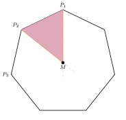
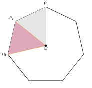
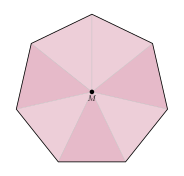

Aufgabe 7.5
Beweisen Sie, dass sich ein regelmässiges $n$-Eck aus $n$ kongruenten Dreiecken zusammensetzen lässt.
- Verbinden Sie alle Ecken mit dem Mittelpunkt
- Nutzen Sie die Rotationssymmetrie des n-Ecks
- Zeigen Sie die Kongruenz der entstehenden Dreiecke
- Verwenden Sie den Kongruenzsatz SWS
Das reguläre $n$-Eck $P_1P_2\ldots P_n$ hat gleich lange Seiten $s$ und gleich grosse Innenwinkel $\varepsilon$.
Schritt 1: der Punkt $M$

Die Winkelhalbierenden bei $P_1$ und $P_2$ schneiden sich in einem Punkt $M$. Im Dreieck $MP_1P_2$ sind beide Winkel an der Seite $P_1P_2$ gleich $\frac{\varepsilon}{2}$. Es ist also gleichschenklig: $\overline{MP_1} = \overline{MP_2}$.
Schritt 2: das nächste Dreieck

Die Dreiecke $MP_1P_2$ und $MP_2P_3$ haben die Seite $MP_2$ gemeinsam, und es ist $\overline{P_2P_3} = \overline{P_1P_2} = s$. Der Winkel bei $P_2$ ist in beiden $\frac{\varepsilon}{2}$, weil $MP_2$ den Winkel bei $P_2$ halbiert. Nach SWS sind die Dreiecke kongruent. Daraus folgt zweierlei: $\overline{MP_3} = \overline{MP_1}$, und der Winkel $MP_3P_2$ ist $\frac{\varepsilon}{2}$, also halbiert $MP_3$ den Winkel bei $P_3$.
Schritt 3: und so weiter

Damit liegt bei $P_3$ genau dieselbe Lage vor wie zuvor bei $P_2$. Der Schluss aus Schritt 2 lässt sich wiederholen, bis man rundherum wieder bei $P_1$ ankommt. Alle $n$ Dreiecke $MP_iP_{i+1}$ sind kongruent.
Im Video: Etappe 3 · Archimedische Methode bei 7:05